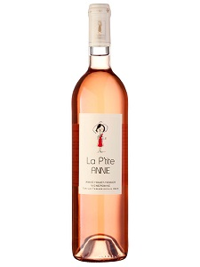

Frutas vermelhas frescas, principalmente morango, framboesa e cereja.
Na boca sente-se a estrutura que a cabernet franc deu ao vinho, mais peso de boca, mas com boa acidez.
Bom fim de boca, vinho fresco e aromático.
Ficha Técnica
Pais
França
Região
Loire
Tipo
Vinhos Rosé
Uvas
Cabernet Franc
Pais
França
Região
Loire
Tipo
Vinhos Rosé
Uvas
Cabernet Franc
Safra
2021
Teor Alcoólico
12,0%
Volume
750ml
Harmonização
Carne Suína
Frutos do Mar
Peixes
Saladas e Vegetais
Mais Informações
Produtor:
Annie houet – Tessier vigneronne
Região: Vale do Loire
Composição: Cabernet Franc
Teor Alcoólico: 12%
Amadurecimento: Não passa por afinamento em barricas.
Temperatura de Serviço: 8°C e 10°C
Harmonização: pode ser servido como aperitivo e vai bem com peixes e frutos do mar em geral, verduras, hortaliças, carne de porco, queijos cremosos.
Voltar